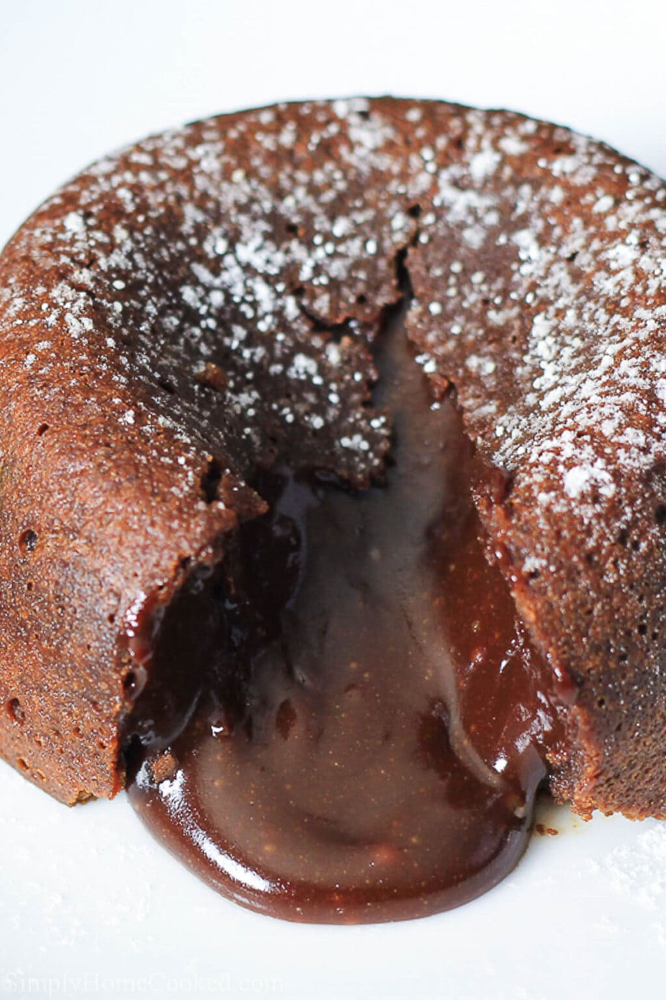

Ghirardelli Individual Chocolate Lava Cakes

Description
A special occasion deserves a special dessert. This lava cake oozes with rich indulgent chocolate that will surely impress your guests.
Ingredients
-
1 ½ (4 ounce) Ghirardelli 60% Cacao Bittersweet Chocolate Baking Bars, divided
- ¼ cup heavy cream
- Cooking spray
- 1 stick unsalted butter
- 3 eggs
- 3 egg yolks
- ⅓ cup white sugar
- ½ teaspoon vanilla extract
- ¼ cup cake flour
- Fresh raspberries
- Whipped cream, or to taste
Directions
- To make centers, melt 2 ounces of chocolate (1/2 a baking bar) and cream in double boiler. Whisk gently to blend. Refrigerate about 2 hours, or until firm.
- Form into 6 balls; refrigerate until needed.
- To make cake, heat oven to 400 degrees F.
- Spray six 4-ounce ramekins or custard cups with cooking spray.
- Melt 4 ounces of chocolate (1 baking bar) and butter in double boiler; whisk gently to blend.
- With an electric mixer, whisk eggs, yolks, sugar, and vanilla on high speed about 5 minutes, or until thick and light. Fold melted chocolate mixture and flour into egg mixture until just combined.
- Spoon cake batter into ramekins. Place a chocolate ball in the middle of each ramekin.
- Bake about 15 minutes, or until cakes are firm to the touch. Let cool for about 5 minutes.
- Run a small, sharp knife around inside of each ramekin. Place a plate on top, invert, and remove ramekin. Garnish with raspberries and a dollop of whipped cream.